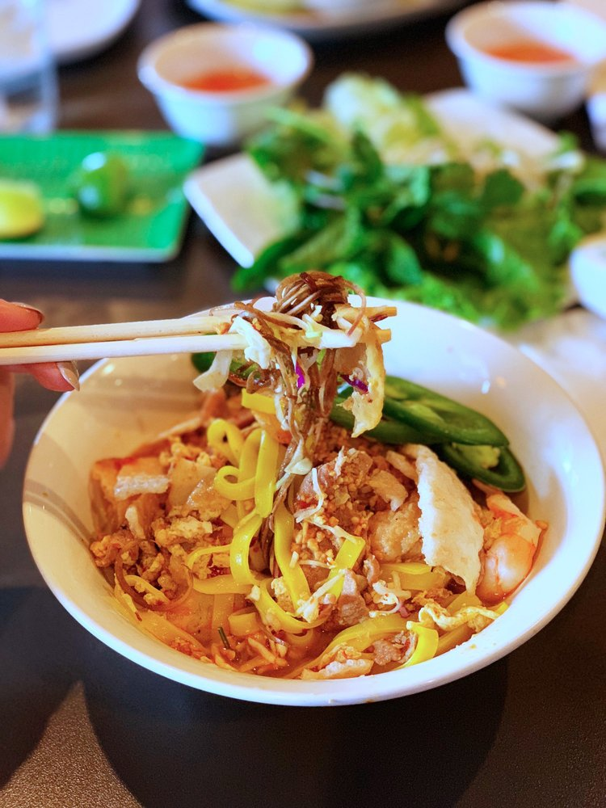

SPECIAL: Grilling out? Take-away our marinated meats for your grill:
PORK CHOPS: $9.95/lb. BEEF RIBS: $10.95/lb.
PORK CHOPS: $9.95/lb. BEEF RIBS: $10.95/lb.
Huynh is a family run restaurant that serves home-made Vietnamese food in a comfortable urban atmosphere.
Huynh Restaurant has been in Houston for over 10 years. Our EaDo location, just behind the convention center, is easily accessed from 59 or downtown.
Our menu includes fresh spring rolls, rice plates, noodle bowls, stir-frys, hot soups, and other fresh traditional Vietnamese dishes.
"This is home-style Vietnamese cooking at its best." Houston Chronicle, Critic's Picks
Top 100 Houston Restaurants Houston Chronicle, Alison Cook, 2012, 2013, 2014, 2015, 2016, 2017, 2018 & 2019
21 Best Vietnamese Restaurants in Houston ThrillList, January 2020
CultueMap's Top 100 The very best restaurants in Houston, 2019
The 21 Best Restaurants in Houston Time Out, Houston, The Eat List 2018
Best Vietnamese Restaurant "Huynh is an easy spot to love" Houston Press, 2010 & 2016
"Best New Restaurants of 2009", #6 - Huynh Houston Chronicle, January 7, 2010
"One of the best Vietnamese restaurants in the city" Houston Press, March 10, 2009
"Major bang for the buck." Houston Chronicle, Critic's Picks
"the food here is made with much more care and talent than we've seen at other Vietnamese restaurants in town... despite Huynh's modern décor and its superb and sometimes creative take on standard Vietnamese dishes, the prices are completely in line with those of its inferiors." Fearless Critic, 2010 Houston Restaurant Guide
"Just when you thought that there was no hope for Old Chinatown, the Huynh family has opened one of the best Vietnamese restaurants in the city, called Huynh." HOUSTON PRESS, March 10, 2009
Top 100 Houston Restaurants Houston Chronicle, Alison Cook, 2012, 2013, 2014, 2015, 2016, 2017, 2018 & 2019
21 Best Vietnamese Restaurants in Houston ThrillList, January 2020
CultueMap's Top 100 The very best restaurants in Houston, 2019
The 21 Best Restaurants in Houston Time Out, Houston, The Eat List 2018
Best Vietnamese Restaurant "Huynh is an easy spot to love" Houston Press, 2010 & 2016
"Best New Restaurants of 2009", #6 - Huynh Houston Chronicle, January 7, 2010
"One of the best Vietnamese restaurants in the city" Houston Press, March 10, 2009
"Major bang for the buck." Houston Chronicle, Critic's Picks
"the food here is made with much more care and talent than we've seen at other Vietnamese restaurants in town... despite Huynh's modern décor and its superb and sometimes creative take on standard Vietnamese dishes, the prices are completely in line with those of its inferiors." Fearless Critic, 2010 Houston Restaurant Guide
"Just when you thought that there was no hope for Old Chinatown, the Huynh family has opened one of the best Vietnamese restaurants in the city, called Huynh." HOUSTON PRESS, March 10, 2009
Huynh Restaurant
912 Saint Emanuel
Houston, TX 77003
713-22-HUYNH
Monday-Saturday
11a-9p
Closed on Sunday
11a-9p
Closed on Sunday
